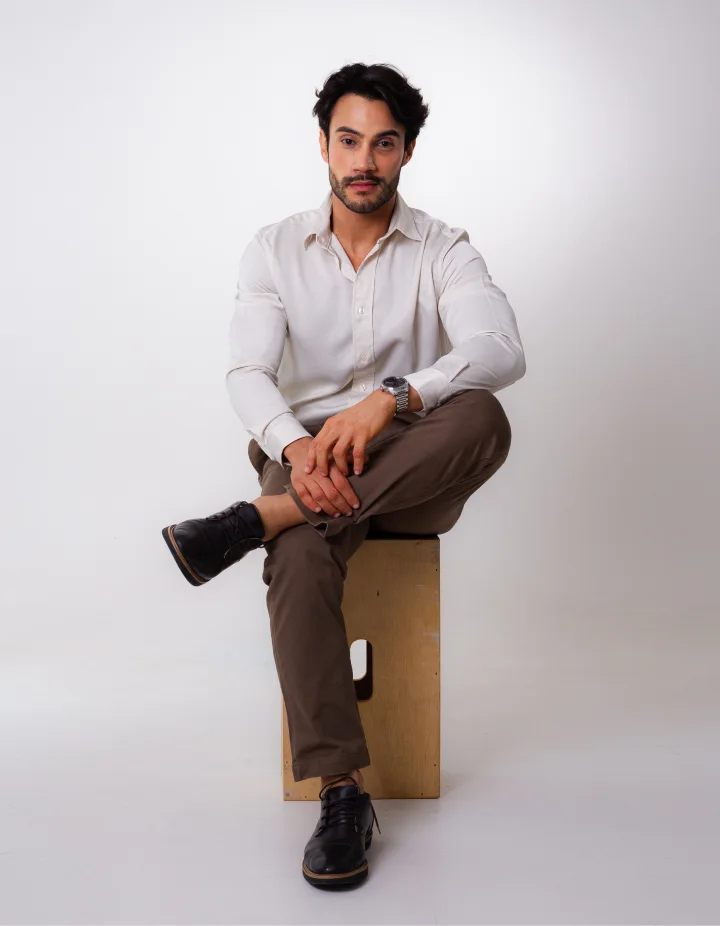

Escuta ativa
Você é ouvido(a) antes de qualquer decisão.
Ciência, sensibilidade e estética consciente para quem quer cuidar da pele sem perder sua identidade.
Para quem já tentou de tudo e ainda sente que a própria pele não representa quem você é.
O cuidado começa antes de qualquer decisão. Ele começa pela escuta.
Entender a sua história, sua rotina e a forma como você se vê é o que torna cada cuidado verdadeiramente individual. A empatia abre espaço para que a ciência atue com precisão, intenção e naturalidade.
Cuidar não é padronizar. Cuidar é ouvir. É a partir desse vínculo que o tratamento deixa de ser apenas técnico e se transforma em um processo consciente, respeitoso e alinhado com quem você é.
Você é ouvido(a) antes de qualquer decisão.
Cuidar hoje para evitar excessos amanhã.
Resultados que não denunciam o procedimento.
Sua pele não é padrão. Seu cuidado também não.
Saúde do couro cabeludo e dos fios com abordagem médica.

O Dr. Marcos Paulo Silveira construiu sua trajetória na medicina unindo conhecimento científico, escuta atenta e respeito à individualidade de cada paciente.
Sua formação em Psicologia e os anos de vivência monástica contribuíram para desenvolver uma perspectiva singular sobre o cuidado: uma medicina que considera não apenas as características físicas, mas também a história, as necessidades e o bem-estar de cada pessoa.
Com atuação voltada à saúde da pele, aos tratamentos estéticos e às tecnologias aplicadas à medicina, desenvolve uma abordagem que valoriza a naturalidade, a segurança e o planejamento individualizado.
Seu propósito é oferecer um cuidado que respeite a identidade de cada paciente, buscando resultados equilibrados e coerentes com suas características e expectativas.
Cuidados individualizados para a saúde, a qualidade e a harmonia da pele, combinando conhecimento médico, tecnologias e procedimentos estéticos com foco em naturalidade e segurança.
Suavização das linhas de expressão, respeitando os movimentos naturais e a individualidade de cada rosto.
Procedimentos voltados à reposição de volume e à harmonização dos contornos, respeitando as proporções individuais.
Estímulo à produção natural de colágeno para melhorar progressivamente a firmeza, a textura e a qualidade da pele.
Tecnologia de ultrassom micro e macrofocado utilizada em tratamentos de flacidez e melhora do contorno facial e corporal, sem cirurgia.
Tecnologias utilizadas para tratar alterações de pigmentação, textura irregular, poros aparentes e determinados sinais do envelhecimento cutâneo.
Abordagem individualizada para o controle das manchas, considerando os fatores envolvidos e os cuidados necessários para reduzir o risco de recorrência.
Cuidados voltados ao controle da vermelhidão, da sensibilidade e das manifestações inflamatórias da pele.
Estratégias individualizadas para o controle da acne e a melhora da aparência das cicatrizes e irregularidades da pele.
A consulta começa antes de qualquer procedimento. É um espaço de escuta, compreensão e alinhamento. Seja presencial ou online, o objetivo é o mesmo: entender você por inteiro, não apenas a sua pele.
Avaliação clínica, análise da pele e definição de protocolos completos de tratamento.
Agendar minha consultaVoltada para quem busca um skincare verdadeiramente individualizado. A partir da sua rotina, da sua pele e das suas necessidades.
Agendar minha consultaAtendimento presencial em endereço pensado para oferecer conforto, privacidade e cuidado.
Rio de Janeiro
Av. Ataulfo de Paiva, 135 - Sala 1213 (12º andar)